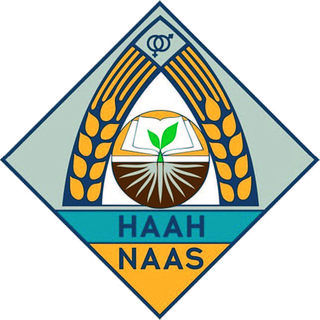

Lucidity × реальна емблема НААН — три напрямки палітри
Одна й та сама реальна печатка (site/public/naas-emblem.png) у компонентах Lucidity. Змінюється лише «хром» (палітра UI), сама печатка незмінна. Шрифти Lora/Inter/JetBrains Mono.
A — навігаційний «тихий каркас»Navy #1E3A5F + темна пшениця. Печатка — самодостатній кольоровий знак на стриманому хромі.

Національна академія аграрних наук УкраїниNAAS · засн. 1918Кабінет